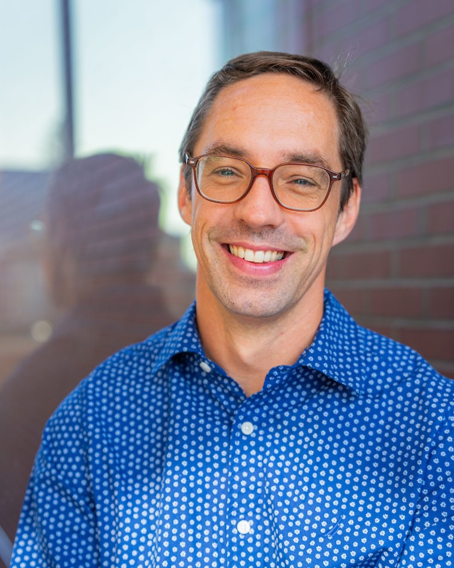
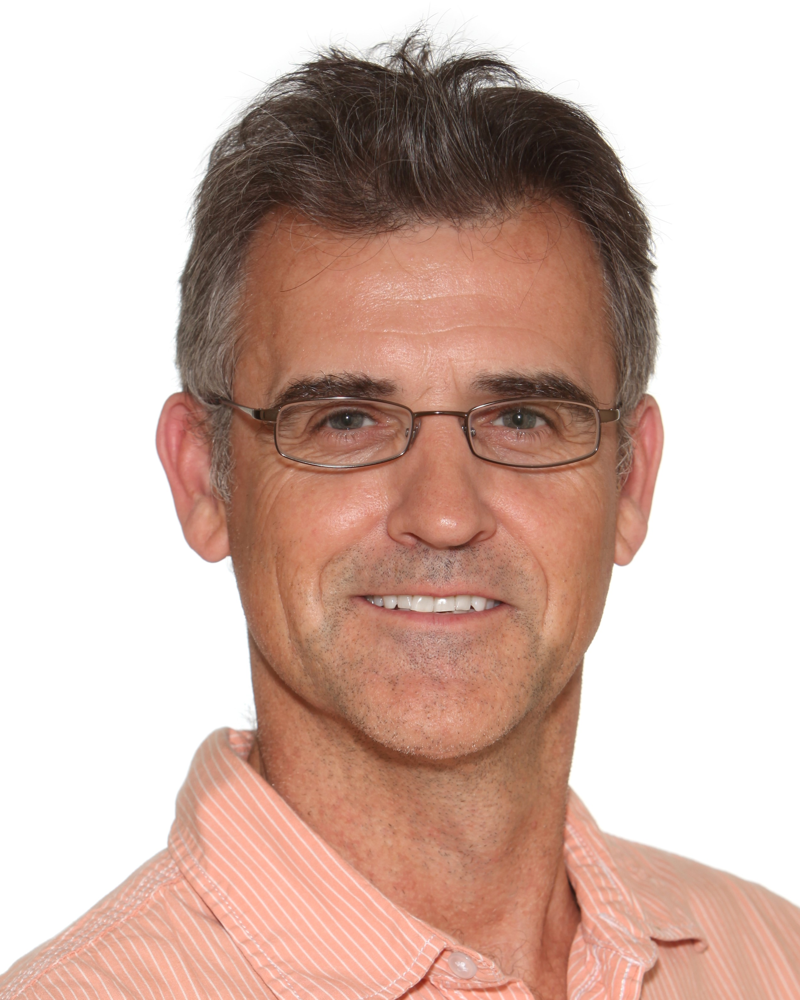
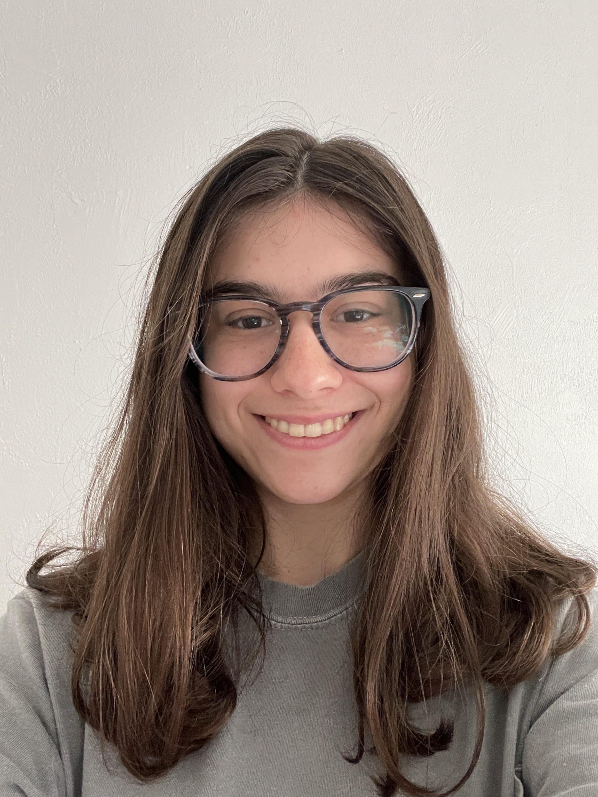
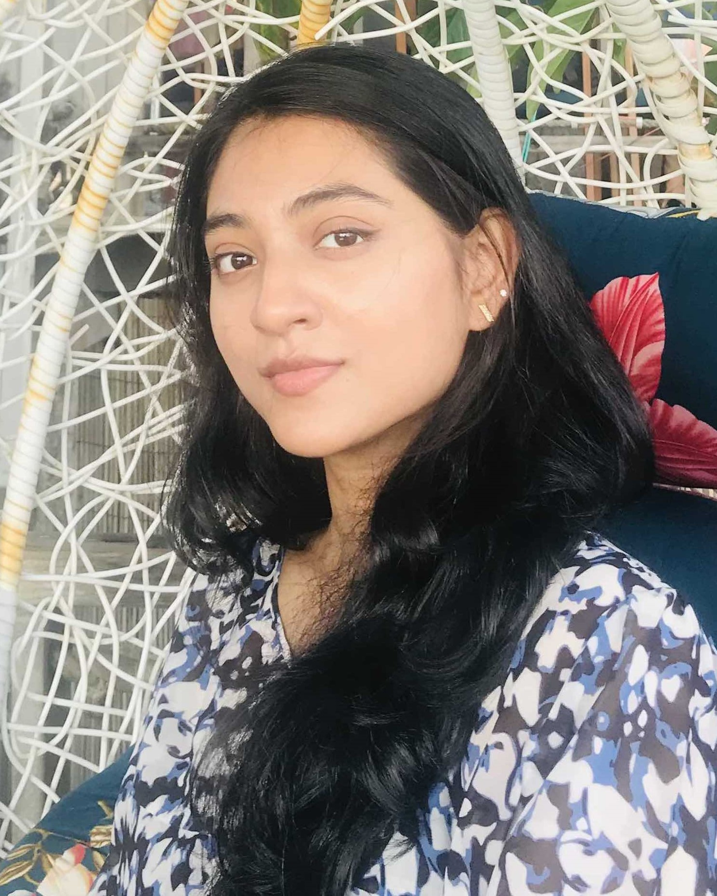
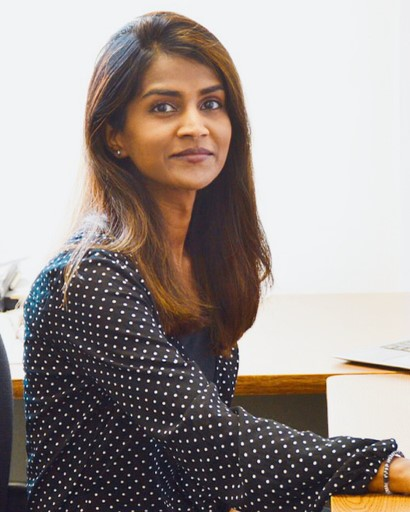
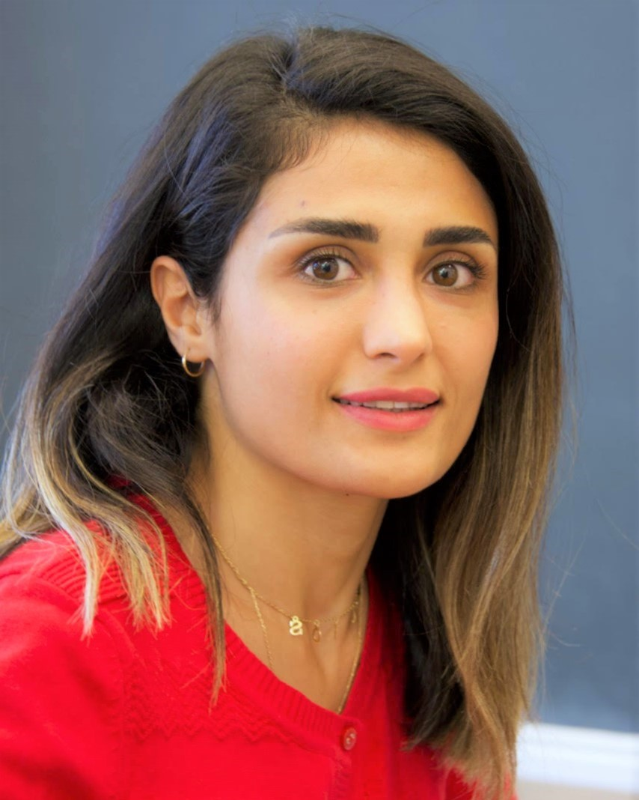
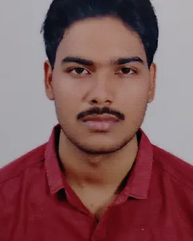

Project
The Safe Agricultural Products and Water Graph (SAWGraph) is an NSF-funded project developing an open knowledge network to support the monitoring and tracing of PFAS and other contaminants in the nation’s food and water systems. SAWGraph integrates environmental observations with information about facilities and industries, hydrology, spatial relationships, agriculture, chemical substances, and other context to support analysis across datasets.
Funding & Collaboration
SAWGraph is supported by the National Science Foundation under Award No. 2333782 as part of the Proto-Open Knowledge Network (Proto-OKN) initiative. The project is led by the University of Maine in collaboration with Kansas State University, Pennsylvania State University, and Northeastern University.
The project brings together expertise in knowledge graphs and ontologies, computer and data science, geospatial and environmental data, hydrology, chemistry, agriculture, and contaminant monitoring. Researchers from the U.S. Environmental Protection Agency participate as federal partners.
Team
The SAWGraph team includes principal investigators, federal partners, researchers, and students from participating institutions.
Current Team
Principal Investigators

Torsten Hahmann
Principal Investigator
University of Maine
Federal Partners

Antony Williams
Federal Partner
U.S. Environmental Protection Agency
Vasu Kilaru
Federal Partner
U.S. Environmental Protection Agency
Research Team
University of Maine

Kendall Phillips
Research Assistant
Yadina Clark
Research Assistant
Kansas State University

Adrita Barua
Research Assistant
Jarrar Amjad
Research Assistant
Pennsylvania State University
Caroline Millwater
Research Assistant
Lina Zhu
Research Assistant
Paulina Alulema
Research Assistant
Northeastern University
Former Team Members

Shirly Stephen
Postdoctoral Researcher
University of California, Santa Barbara

Sonia Moavenzadeh
Research Assistant
University of Maine
Hassimiou Niane
Research Assistant
University of Maine

Revanth Babu Raavi
Research Assistant
Kansas State University
Contact
For general questions about SAWGraph, its data and methods, or opportunities for research collaboration, contact Principal Investigator Torsten Hahmann at the University of Maine.